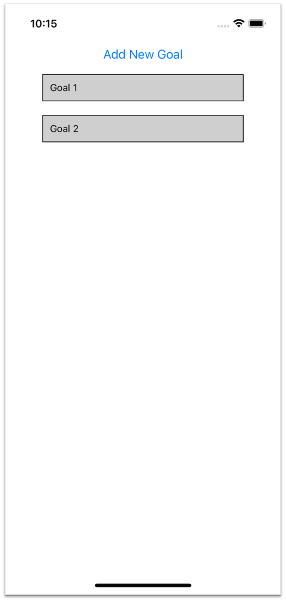
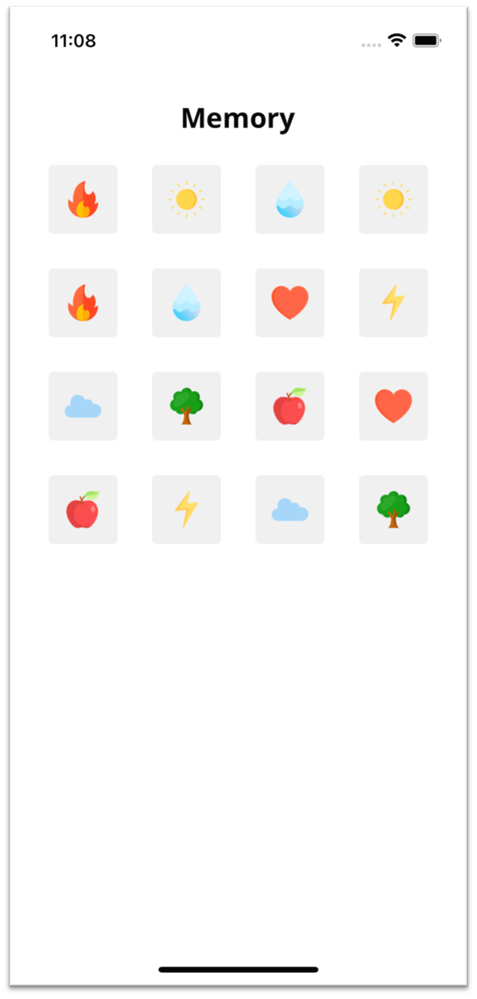
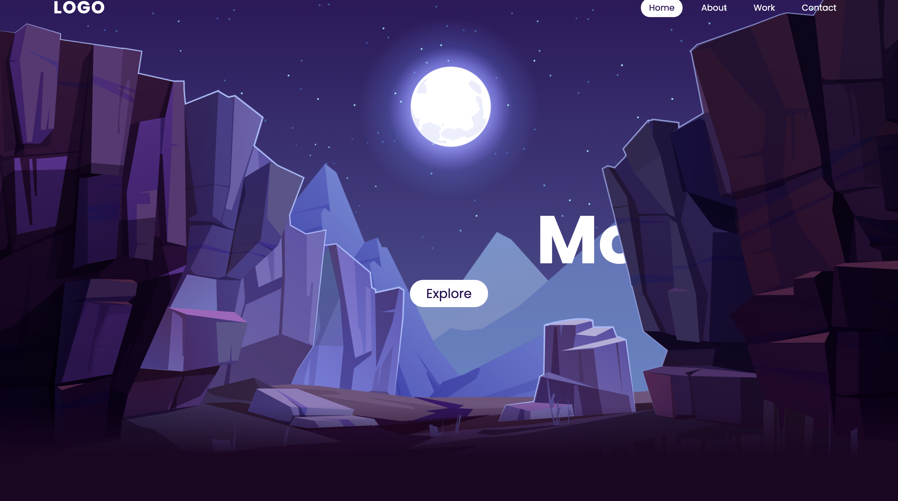
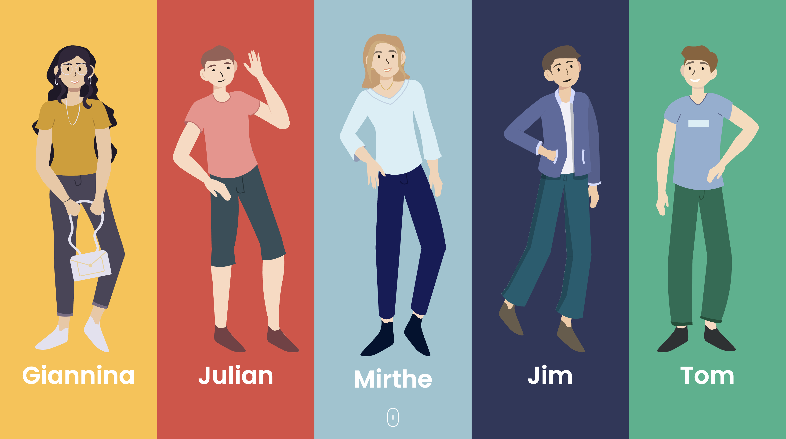
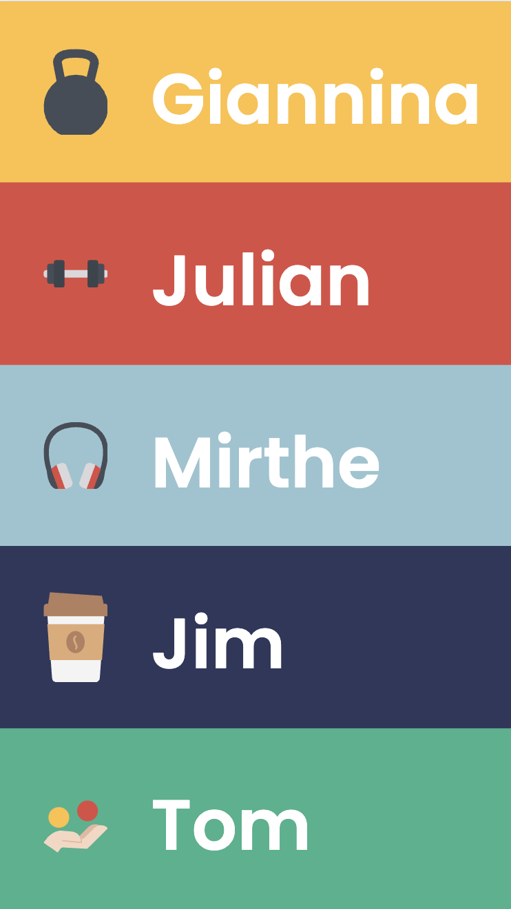

Leerdoel 2
Een app maken in React
In het tweede blok van de minor ben ik gaan leren hoe ik een mobiele app kan maken doormiddel van react-native. Ik heb hiervoor gekozen, omdat het handig is dat je weet wat er allemaal bij komt kijken als er een app gemaakt wordt. Zo kan ik in het vervolg als ik een app moet ontwerpen daar meer rekening mee houden.
Als eerst ben ik een tutorial gaan kijken en die na gaan doen. Het was een simpele app die ik maakt, maar het was een goede tutorial om te volgen.
Uiteindelijk ben ik tot mijn eigen app gekomen. Helaas is hij nog niet helemaal werkend, maar het doel was om een memory game te maken.
Leerdoel 4
Micro interactions en het maken van een responsive website
Het vierde blok van de minor ben ik bezig geweest met micro interactions. Zo heb ik eerst geoefend met parallax en die later ook verwerkt in deze site. Ook heb ik wat kleine interactions gemaakt, zoals het scroll icoontje animeren op deze site. Verder ben ik ook bezig geweest met het programmeren van deze website en zorgen dat hij op elk apparaat te gebruiken is.
  